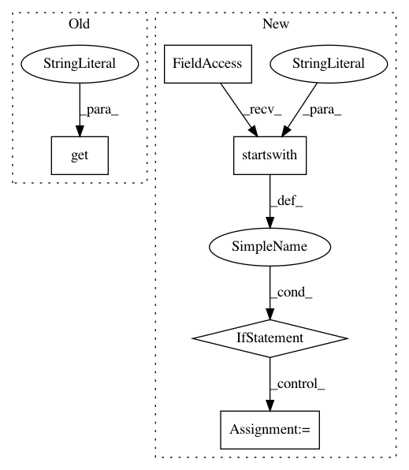

8d9552939243b3f9cf97cad3133965cff11f70f7,buildtests/basic/test_absolute_ld_library_path.py,,,#,15
Before Change
libpath += "/"
print("LD_LIBRARY_PATH expected: " + libpath)
print("LD_LIBRARY_PATH current: " + os.environ.get("LD_LIBRARY_PATH"))
assert libpath == os.environ.get("LD_LIBRARY_PATH")
After Change
// The name of the environment variable used to define the path where the
// OS should search for dynamic libraries.
if sys.platform.startswith("aix"):
libpath_var_name = "LIBPATH"
else:
libpath_var_name = "LD_LIBRARY_PATH"
print("LD_LIBRARY_PATH expected: " + libpath)
libpath_from_env = os.environ.get(libpath_var_name)
print("LD_LIBRARY_PATH current: " + libpath_from_env)
In pattern: SUPERPATTERN
Frequency: 3
Non-data size: 5
Instances
Project Name: pyinstaller/pyinstaller
Commit Name: 8d9552939243b3f9cf97cad3133965cff11f70f7
Time: 2011-11-28
Author: mzibr.public@gmail.com
File Name: buildtests/basic/test_absolute_ld_library_path.py
Class Name:
Method Name:
Project Name: AIRLab-POLIMI/mushroom
Commit Name: 20ed80d197df3101c58d9debca36fac58f0dd7b2
Time: 2017-11-08
Author: carloderamo@gmail.com
File Name: mushroom/approximators/regressor.py
Class Name: Regressor
Method Name: __init__
Project Name: facebookresearch/ParlAI
Commit Name: 750f80bfcfdc355a54489cf89965e8e9c6c48174
Time: 2018-07-30
Author: ahm@fb.com
File Name: parlai/core/teachers.py
Class Name: FixedDialogTeacher
Method Name: batch_act